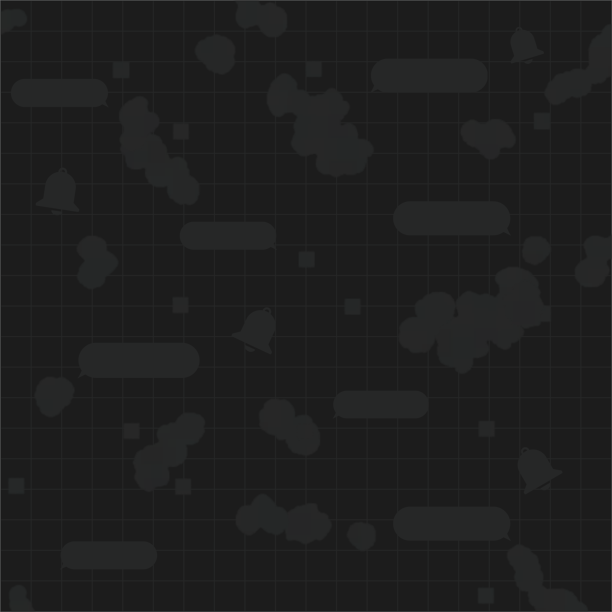
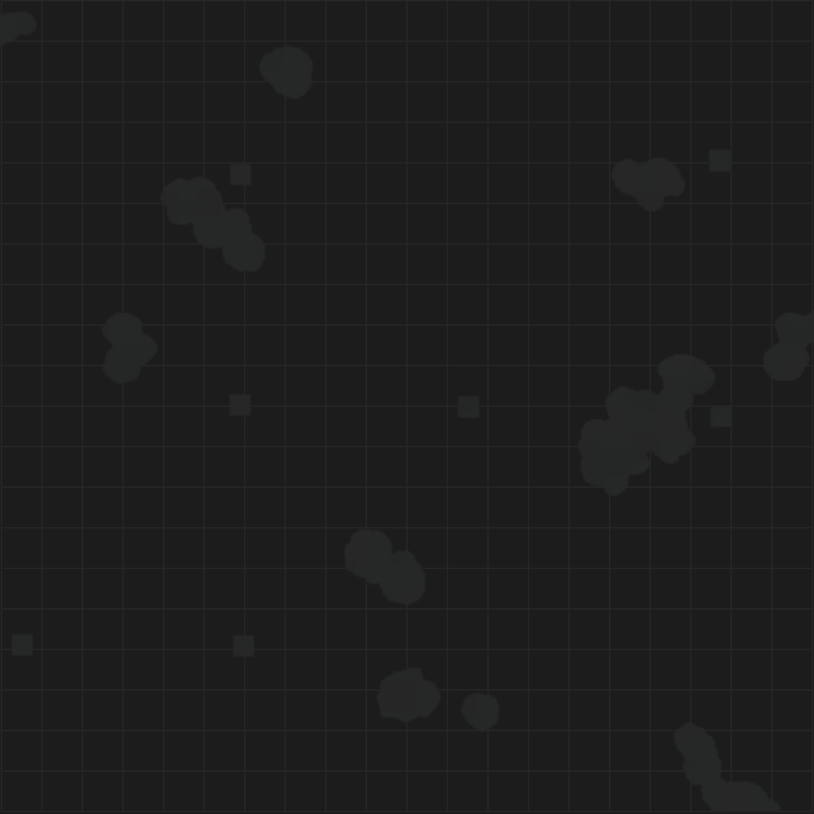
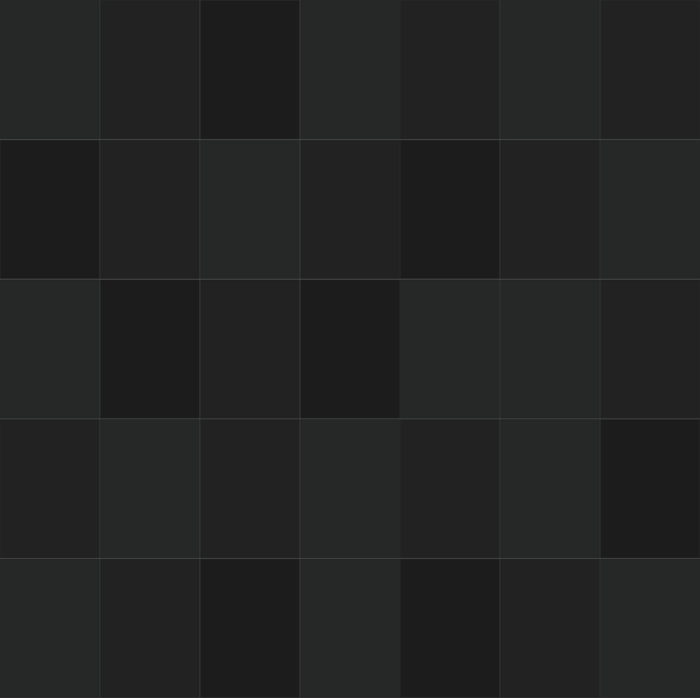
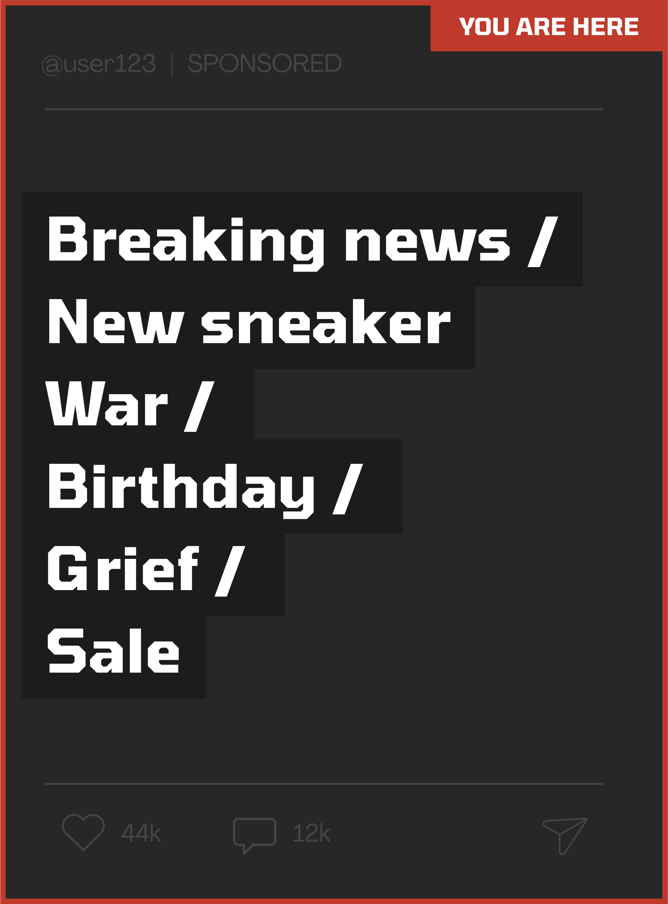
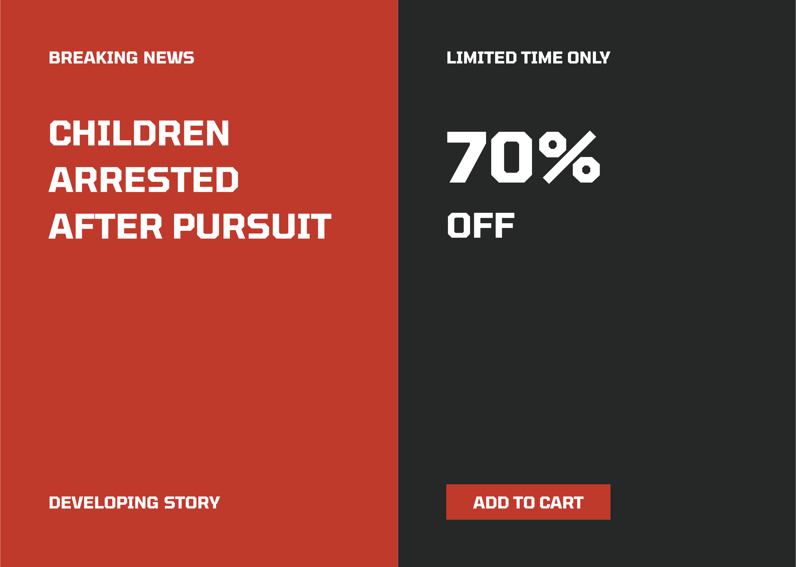
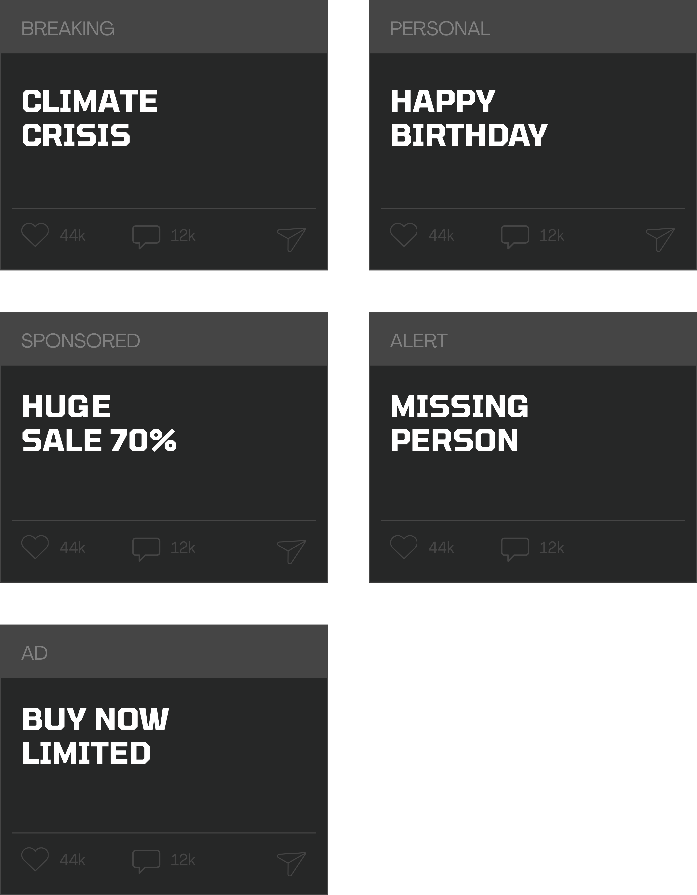
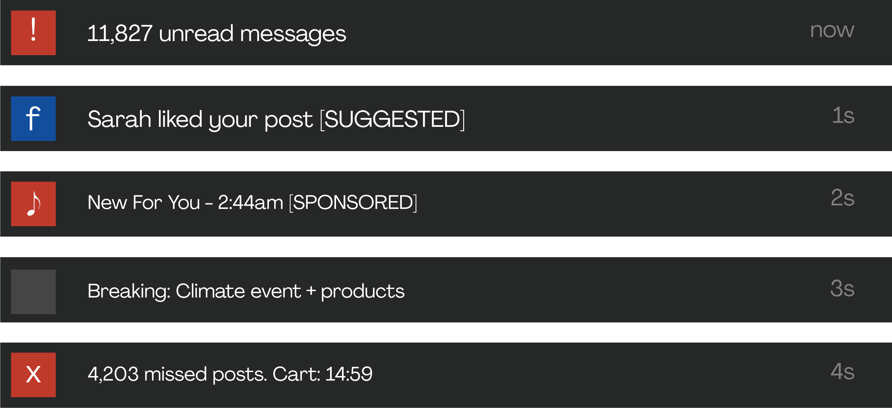
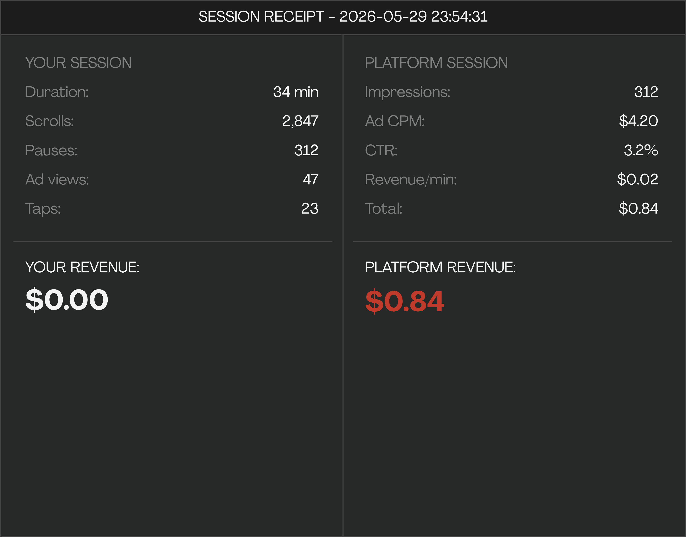
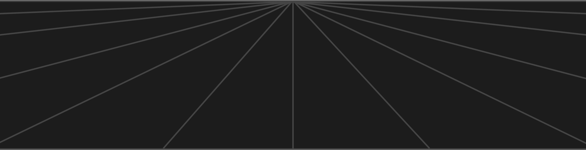

ISSUE 01
NO LIMITS · NO CENTRE · NO HIERARCHY · NO EXIT
Not in concrete and steel — in fibre optic cable, server farms and notification architecture.


A CITY WITH NO LIMITS. NO CENTRE. NO HIERARCHY.

THE SAME GRID. DIFFERENT ADDRESS.

The post is the unit. Every post occupies an equivalent cell. Same rectangle, same engagement counter.

War and shopping occupy the same visual container. Both become scrollable.

ABSENCE OF EXIT · CONTINUATION · NON ARRIVAL

Every second your eye rests on a pixel is logged, priced and traded.

What feels like choice is only progression through a structure that has already been set.
